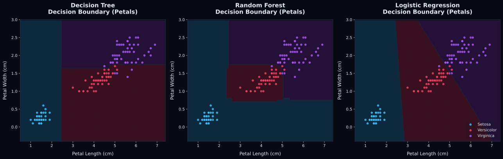

--
Test Accuracy
--
Precision (Macro)
--
Recall (Macro)
--
F1-Score (Macro)
How this algorithm works
Loading algorithmic details...
Model Evaluation Visualizations

Iris Raw Dataset
| Sepal Length | Sepal Width | Petal Length | Petal Width | Species |
|---|
Page 1 of 19